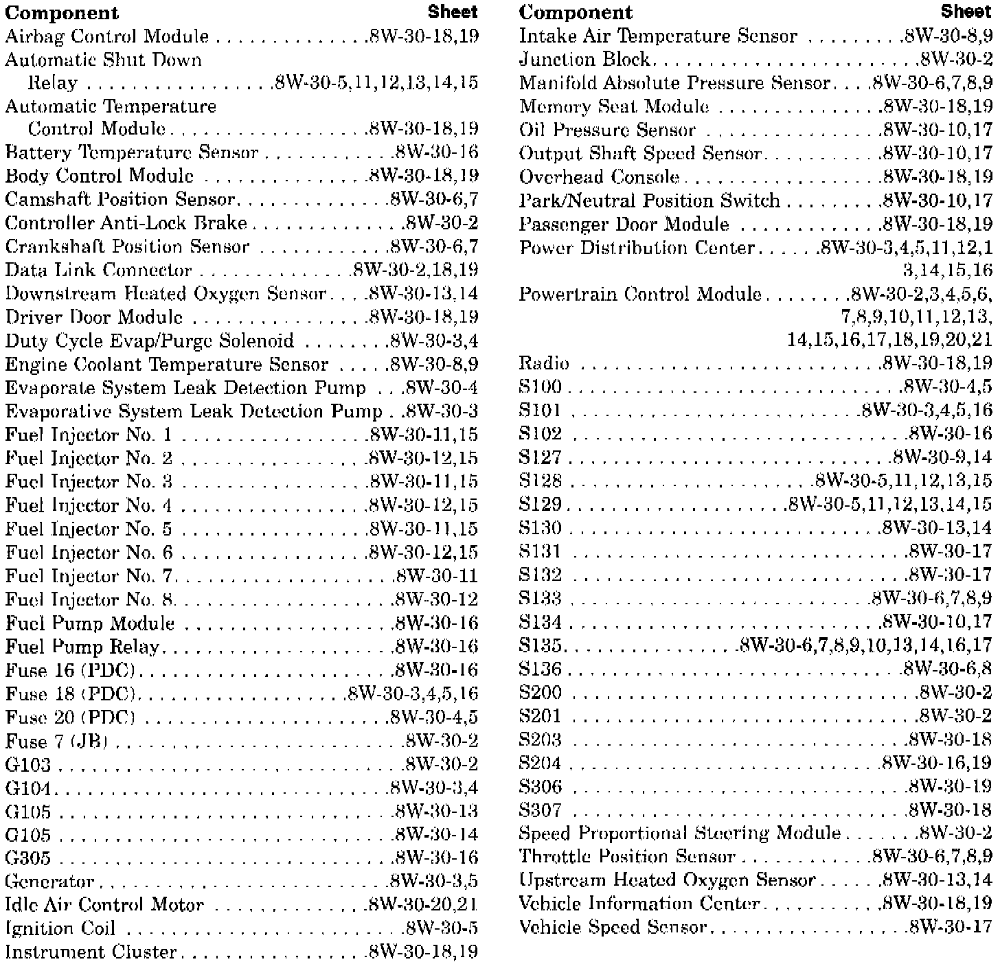

Operation CHARM
: Car repair manuals for everyone.
Русский
Home
>>
Jeep
>>
1997
>>
Grand Cherokee 4WD L6-4.0L VIN S
>>
Repair and Diagnosis
>>
Diagrams
>>
Electrical Diagrams
>>
Diagrams By Group Number
>>
Group 8W-30 Fuel/Ignition System
>>
Sheet 8W-30-1 Group Index
Sheet 8W-30-1 Group Index
Fuel/Ignition Systems Component Index:
